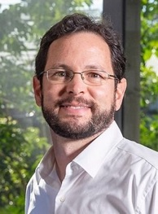

Homepage Fabio Ramos

Welcome!
I am a Principal Research Scientist at NVIDIA, and Professor in machine learning and robotics at the School of Computer Science, University of Sydney. Before, I was a co-Director of the Centre for Translational Data Science, and previously an Australian Research Council (ARC) Research Fellow at the Australian Centre for Field Robotics. My research is focused on modelling and understanding uncertainty for prediction and decision making tasks, and includes Bayesian statistics, data fusion, anomaly detection, and reinforcement learning. Over the last ten years I have applied these techniques to robotics, mining and exploration, environment monitoring, and neuroscience. I received the BSc and the MSc degrees in Mechatronics Engineering at University of Sao Paulo, Brazil, in 2001 and 2003 respectively, and the PhD degree at the Australian Centre for Field Robotics, University of Sydney, Australia, in 2008. My Yoda Master was Hugh Durrant-Whyte.

NEWS
(24/06/2020)
I am program chair for CoRL 2020. Information about the submission of papers is available here.
(10/09/2018)
Kelvin Hsu, a PhD student in my lab, received the Best Student Paper award at the European Conference on Machine Learning (ECML’18) for the paper “Hyperparameter Learning for Conditional Mean Embeddings with Rademacher Complexity Bounds”. Details are available in the links below:
[Paper] [Code] [Talk] [Slides] [Poster] [Blog]
(17/08/2018)
I’m currently on sabbatical at NVIDIA research in Seattle, WA.
(20/02/2018)
Finally updated the web-site with all publications from 2017 and 2018 (so far).
(22/07/2015)
The videos for the Machine Learning Summer School 2015, I co-organised with Edwin Bonilla and Yang Wang are now available in the link below:
http://rp-www.cs.usyd.edu.au/~mlss/#courseContent
(12/07/2015)
You can now download the code for Hilbert Maps (RSS2015) from the repository below. The code is in python and was written by Lionel Ott:
https://bitbucket.org/LionelOtt/hilbert_maps_rss2015
(29/05/2015)
I have not updated my publication list for this year yet, but take a look at this new paper just accepted at RSS:
-
-Hilbert maps: scalable continuous occupancy mapping with stochastic gradient descent
Fabio Ramos and Lionel Ott
(01/12/2014)
Our new paper on joint clustering and anomaly detection presented at NIPS 2014 is available here.
(17/03/2012)
The following paper will be presented at AAAI 2012, in Toronto, Canada:
-
-Learning Non-Stationary Space-Time Models for Environmental Monitoring
Sahil Garg, Fabio Ramos, Amarjeet Singh
(14/03/2012)
Together with NICTA, we have been awarded A$1.9m from the Australian Centre for Renewable Energy (ACRE) to develop new machine learning methods for exploration of geothermal sources (more).
(17/02/2012)
I was awarded the Discovery Early Career Research Award (DECRA) by the Australian Research Council, starting in March, 2012.
(17/02/2012)
The following papers will be presented in ICRA 2012, in St Pauls, USA:
-
-Semi-parametric Models for Visual Odometry
Vitor Guiziline and Fabio Ramos
-
-Unsupervised Incremental Learning for Long-Term Autonomy
Lionel Ott and Fabio Ramos
- Automatic Rock Recognition from Drilling Performance Data
Hang Zhou, Peter Hatherly, Sildomar Monteiro, Fabio Ramos, Florian Oppolzer, Eric
Nettleton, Steven Scheding
(01/06/2011)
The following paper will be presented in UAI 2011. We show that LP decompositions can be used to derive an efficient algorithm for MAP inference in large probabilistic graphical models:
-
- Distributed Anytime MAP Inference
Joop van de Ven and Fabio Ramos
(17/05/2011)
The following paper will be presented in AAAI 2011. If you are interested in a continuous alternative to occupancy grids, I highly recommend reading it:
-
- Continuous Occupancy Mapping with Integral Kernels
Simon O'Callaghan and Fabio Ramos
(17/05/2011)
These are our papers accepted in IJCAI 2011. They will be available for download soon:
-
-Multi-Kernel Gaussian Processes
Arman Melkumyan and Fabio Ramos
- Learning 3D Geological Structure from Drill-Rig Sensors for Automated Mining
Sildomar Monteiro, Joop van de Ven, Fabio Ramos and Peter Hatherly
(17/05/2011)
Welcome to my new PhD Students, Markus Schneider and Sachinthaka Abeywardana.
(19/01/2011)
These are the papers from the Learning and Reasoning group accepted in ICRA, 2011. They will be soon available for download:
- Non-stationary dependent Gaussian processes for data fusion in large-scale terrain modeling
Shrihari Vasudevan, Fabio Ramos, Eric Nettleton, Hugh Durrant-Whyte
-
-An adaptive data driven model for characterizing rock properties from drilling data
Hang Zhou, Peter Hatherly, Fabio Ramos, Eric Nettleton
-
-Visual odometry learning for unmanned aerial vehicles
Vitor Guizilini, Fabio Ramos
-
-Multi-task learning of system dynamics with maximum information gain
Jose Francisco Zubizarreta, Fabio Ramos
-
-Multi-class classification of vegetation in natural environments using an unmanned aerial system
Alistair Reid, Fabio Ramos, Salah Sukkarieh
-
-Learning navigational maps by observing human motion patterns
Simon Timothy O'Callaghan, Surya Singh, Alen Alempijevic, Fabio Ramos
(03/01/2011)
From 04/01/2011, I will be joining the School of Information Technologies at University of Sydney as a Senior Lecturer (Assistant Professor). I will continue to be associated to ACFR.
(11/09/2010)
My interview to Globo Reporter (Brazilian TV show) is available here:
http://www-personal.acfr.usyd.edu.au/f.ramos/GloboReporter.mp4
(01/08/2010)
Welcome to my new PhD students Lionel Ott and Kai Zhan.
(29/07/2010)
I will give an invited talk at IROS 2010, in the Graphical Model workshop. The title will be: “Linear Programming Decompositions for Distributed, Anytime Inference in Graphical Models”.
(29/07/2010)
I am part of the program committee for the International Conference on Information Processing in Sensor Networks (IPSN) 2011.
(26/07/2010)
New papers in IROS 2010
-
-Robust Place Recognition with Stereo Cameras
César Cadena, Dorian Galvez-Lopez, Fabio Ramos, Juan D. Tardos and Jose Neira
-
-Large-scale terrain modeling from multiple sensors with dependent Gaussian processes
Shrihari Vasudevan, Fabio Ramos, Eric Nettleton and Hugh Durrant-Whyte
(07/01/2010)
These are the papers from the Learning and Reasoning group accepted in ICRA, 2010. They will be soon available for download:
- Inferring Motion Uncertainty from Shape-Matching
Zuolei Sun, Joop van de Ven, Fabio Ramos, Hugh Durrant-Whyte
- An Integrated Probabilistic Model for Scan-Matching, Moving Object Detection and Motion Estimation
Joop van de Ven, Fabio Ramos, Gian Diego Tipaldi
- Modeling and Decision Making in Spatio-Temporal Processes for Environmental Surveillance
Amarjeet Singh, Fabio Ramos, Hugh Durrant-Whyte, William Kaiser
- Automated Rock Recognition with Wavelet Feature Space Projection and Gaussian Process Classification
Hang Zhou, Sildomar Monteiro, Peter Hatherly, Fabio Ramos, Eric Nettleton, Florian Oppolzer
- Gaussian Process Occupancy Maps Incorporating Sensor and Location Uncertainty
Simon Timothy O'Callaghan, Fabio Ramos, Hugh Durrant-Whyte
- Gaussian Process Fusion For Large Scale Terrain Modeling
Shrihari Vasudevan, Fabio Ramos, Eric Nettleton, Hugh Durrant-Whyte
